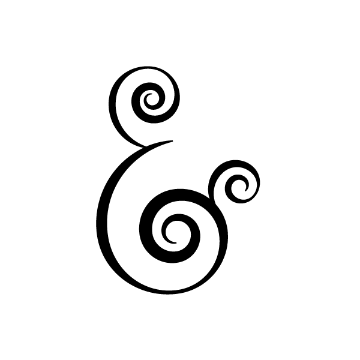
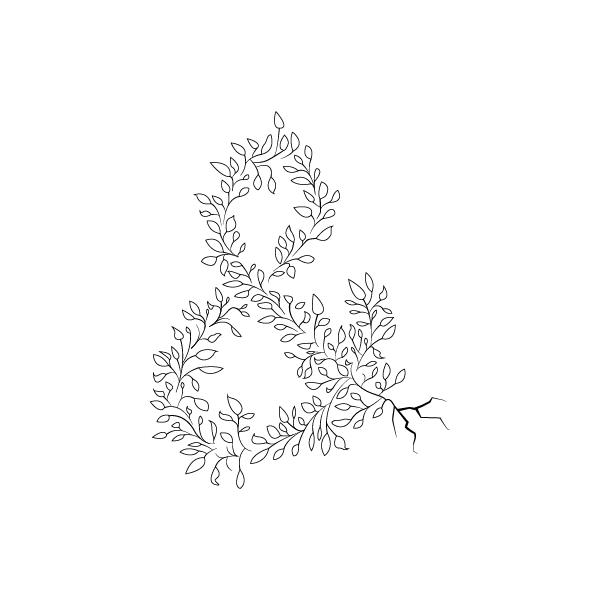
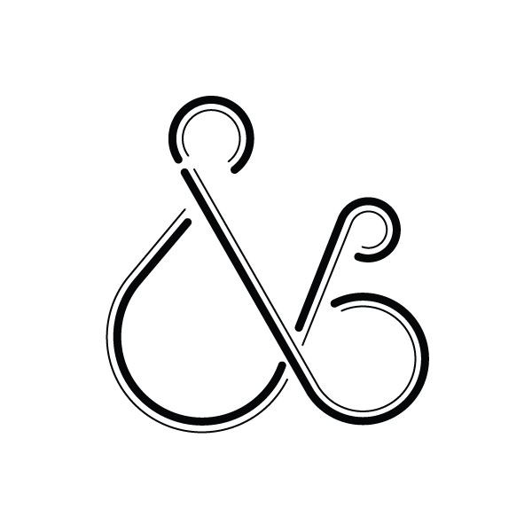
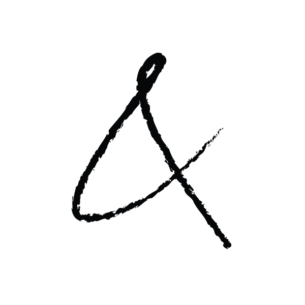
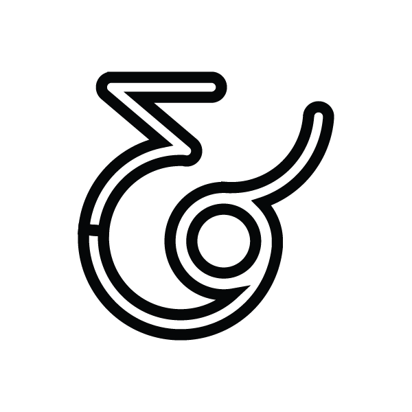
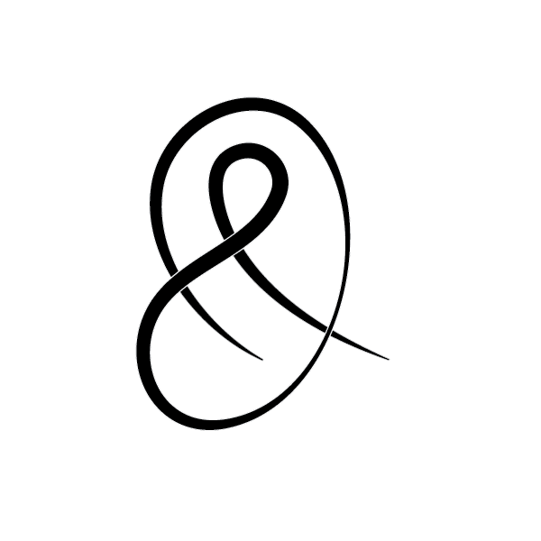
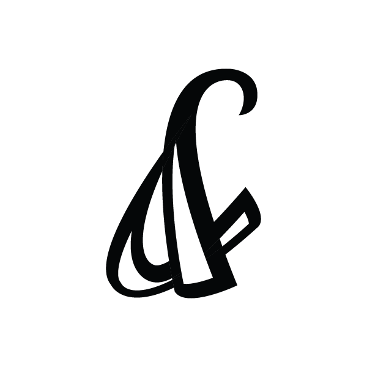
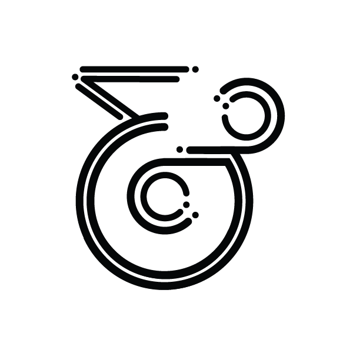
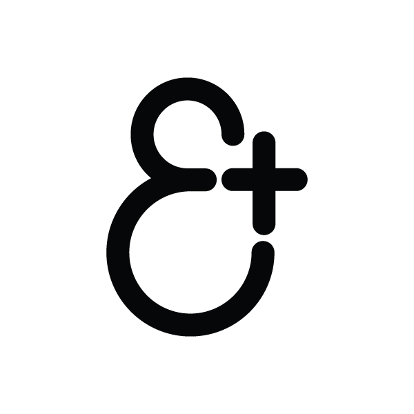
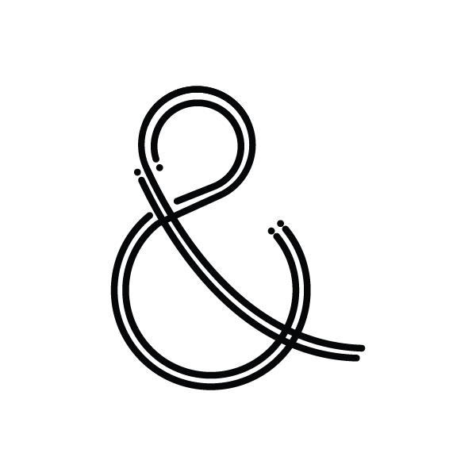

Menu
Skip to content
Home
About
Exhibitions
Contact
Search for:
am.persand.me
a daily ampersand experiment
All posts by
fireantrescue
#023
#022

#021

#020

#019
#018

#017
#016
#015

#014

#013
#012
#011
#010
#009

#008

#007
#006
#005
#004

#003

#002
#001
Posts navigation
Newer posts
→